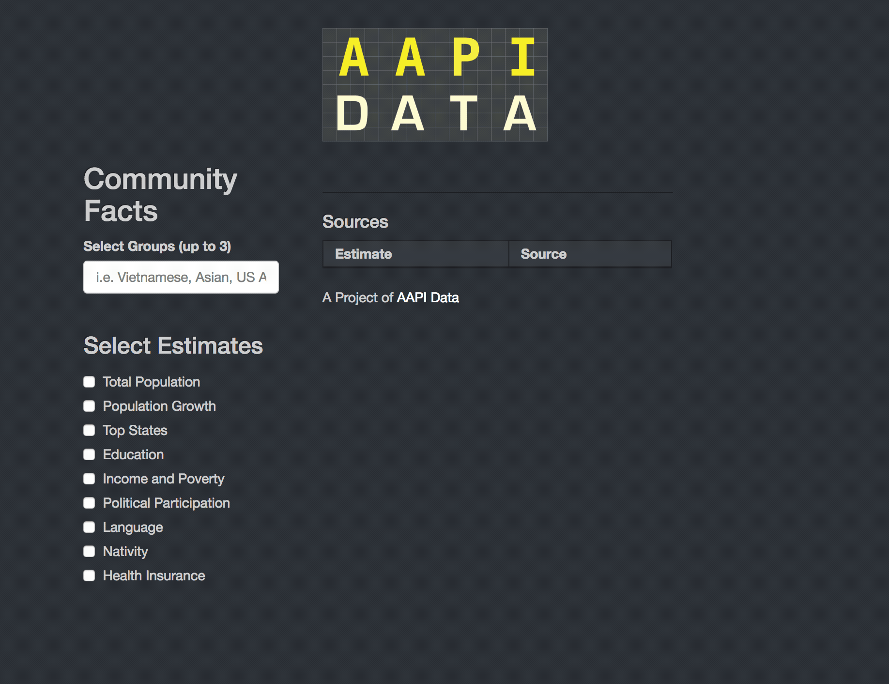

My name is Sono Shah. I am a Ph.D. candidate in Political Science at the University of California Riverside. I also work as a researcher with AAPI Data, where we make data on Asian Americans and Pacific Islanders more accessible. I’m interested in race & ethnicity, political participation, and civic engagement in the U.S.
My dissertation focuses on Asian Americans and Latinos and their campaign contribution behavior where I use administrative records from the FEC as well as survey data from the National Asian American Survey.
As part of my work at AAPI Data, I also create tools to increase the accessibility of demographic data, my most recent project was to create a Community Factsheet tool using shiny, check it out here. 
sshah018 [at] ucr [dot] edu
Political Science
University of California Riverside
Racial and Ethnic Politics
Asian American Politics
American Politics
Campaigns and Elections
Data Visualization
Methodology
Forthcoming
Who sees an Hourglass? Assessing Citizens' Perception of Local Economic Inequality
with Ben Newman and Erinn Lauterbach
Research and Politics
The scholarly literature is observing a slow but steady growth in research exploring the effects of subnational economic inequality on political attitudes and behavior. Germane to this work is the assumption that citizens are aware of the level of inequality in their local residential context. At present, however, the evidence in support of this assumption is mixed. This article attempts to offer the literature improved tests of citizens’ awareness of local inequality by addressing a key limitation in past work—the discordance between the geographic unit underlying measures of the independent and dependent variables. Analyzing two national surveys employing a measure of perceived inequality scaled to the local level, the results suggest that citizens are indeed aware of the level of income inequality in their local environment and that the link between objective and perceived local inequality is most pronounced among lower income citizens.
2018
Race, Place, and Building a Base: Ethnic Change, Perceived Threat, and the Nascent Trump Campaign for President
with Ben Newman and Loren Collingwood
Public Opinion Quarterly
A prominent feature of Donald Trump’s campaign for president was the use of racially inflammatory rhetoric and fear over immigration—specifically from Mexico—to galvanize the electorate. Despite the commonly accepted assertion that hostility toward Mexican immigrants was an important attractor of core supporters to his base, analysts and academics alike have failed to explore the role that environmental indicators of perceived threat from immigration, such as residing in an area with a growing Latino population, played in generating support for Trump early in his campaign. We demonstrate that residing in a high-Latino-growth area is predictive of support for Trump following, but not before, his utterance of inflammatory and bellicose comments about Mexican immigrants. Our results suggest that, in addition to the importance of racial resentment and economic frustration, support for Trump in the early campaign period represented an adversarial reaction among Americans to Latino-led diversity.
Media: [ LSE American Politics and Policy ] [ Pacific Standard ] [ Newsweek ]
2016
Gaps in Civic Engagement among Latinos and Asian Americans
with Karthick Ramakrishnan
In Klofstad, Casey (ed.),
Resources, Engagement, and Recruitment: New Advances in the Study of Civic Volunteerism,
Philadelphia, PA:
Temple University Press.
2017
Unequal Voices Part II: California's Racial Disparities in Political Participation
with Karthick Ramakrishann, John Dobbard, and Kim Engie
Published Report,
Advancement Project
2016
Unequal Voices Part I: California's Racial Disparities in Political Participation
with Karthick Ramakrishann, John Dobbard, and Kim Engie
Published Report,
Advancement Project
The Trump Effect: Experimental Investigation into the Emboldening Effect In preparation for submission
with Ben Newman, Jennifer Merolla, Danielle Lemi, Loren Collingwood, and Karthick Ramakrishnan
This article explores the effect of explicitly racial and inflammatory speech by political elites on mass citizens in a societal context where equality norms are widespread and generally heeded yet a subset of citizens nonetheless possess deeply ingrained racial prejudices. We argue that such speech should have an "emboldening effect" among the prejudiced, particularly where such speech goes without clear and strong condemnation by other elite political actors. To test this, we focus on the case of the Trump campaign for President in the United States, and utilize a survey experiment embedded within an online panel study. Our results demonstrate that in the absence of prejudiced elite speech, prejudiced citizens constrain the expression of their prejudice; however, in the presence of prejudiced elite speech—particularly when such speech is tacitly condoned by other elites—we find that the prejudiced are emboldened to both express and act upon their prejudices.
Donor Preferences fo Coethnic Representation, breaking the mold or more the same?
Do ethnic and racial minorities prefer coethnic candidates? Theories of representation posit that citizens prefer representatives who are of the same racial or ethnic background as themselves. The notion that coethnic representatives are preferable for minority populations has been used as justification for measures that are designed to increase the amount of minority legislators elected to office, empirical evidence for these claims however, are mixed. I contribute to this debate by offering a novel way to measure support for coethnic representation by estimating rates of coethnic giving among campaign donors from a dataset of over 8 million contribution records from 1980. This measure improves upon previous work which rely on self-reported survey data, and other studies that are limited by the number of elections featuring co-ethnic candidates and the availability of voter data. I find that while White donors donors give the largest share of their contributions to coethnic candidates, this is primarily due to the large amount of White candidates running for office. Controlling for the number of White candidates, this relationship disappears. However, I find that Hispanic and especially Asian donors give significant amounts of money to coethnic candidates even though these candidates represent very small portions of the candidates running for office. This relationship remains after controlling for factors that are traditionally thought to influence contribution behavior. These findings contribute to the ongoing debate of whether racial and ethnic minorities prefer coethnic representatives and challenges extent to which conventional expectations of donor behavior may should apply to minority donors.
How to Win Friends and Influence People: Strategic Contributions of the Indian Lobby
with Maneesh Arora and Shubha Prasad
As one of the newest diasporic lobbies in Washington, DC, the US-India Politi- cal Action Committee (USINPAC) has been very successful in promoting stronger bilateral relations between the US and India. In order to achieve its goal, USINPAC has made strategic contributions to members of Congress who serve on committees that directly impact US foreign policy towards India. However, a puzzling disrup- tion in this pattern of strategic contributions is noticeable after 2008. We argue that this shift in contributions towards seemingly non-strategic candidates is indicative of USINPAC’s changing role. USINPAC is moving towards a more identity-based approach wherein it looks to politically represent Indian-Americans. Using a unique donor survey and a nationally representative sample of Indian Americans from the National Asian American Survey, we compare the political values and interests of the USINPAC donor network to those of the broader Indian American community.
Asian American Agendas
with Janelle Wong and Karthick Ramakrishnan
Minority Donors: Exploring Asian American Donor Behavior
My dissertation explores the role race & ethnicity plays in campaign contribution behavior by looking at Asian American donors. Future work will examine how other donors from other marginalized groups such as Latinos and African Americans may also be influenced by race or ethnicity.
Asian Americans and Affirmative Action in California
Racial Composition of Congressional Staff
with Erinn Lauterbach
The Trump Effect: Experimental Investigation into the Emboldening Effect
with Ben Newman, Jennifer Merolla, Danielle Lemi, Loren Collingwood, and Karthick Ramakrishnan
This article explores the effect of explicitly racial and inflammatory speech by political elites on mass citizens in a societal context where equality norms are widespread and generally heeded yet a subset of citizens nonetheless possess deeply ingrained racial prejudices. We argue that such speech should have an “emboldening effect” among the prejudiced, particularly where such speech goes without clear and strong condemnation by other elite political actors. To test this, we focus on the case of the Trump campaign for President in the United States, and utilize a survey experiment embedded within an online panel study. Our results demonstrate that in the absence of prejudiced elite speech, prejudiced citizens constrain the expression of their prejudice; however, in the presence of prejudiced elite speech—particularly when such speech is tacitly condoned by other elites—we find that the prejudiced are emboldened to both express and act upon their prejudices.
Donor Preferences fo Coethnic Representation, breaking the mold or more the same?
Do ethnic and racial minorities prefer coethnic candidates? Theories of representation posit that citizens prefer representatives who are of the same racial or ethnic background as themselves. The notion that coethnic representatives are preferable for minority populations has been used as justification for measures that are designed to increase the amount of minority legislators elected to office, empirical evidence for these claims however, are mixed. I contribute to this debate by offering a novel way to measure support for coethnic representation by estimating rates of coethnic giving among campaign donors from a dataset of over 8 million contribution records from 1980. This measure improves upon previous work which rely on self-reported survey data, and other studies that are limited by the number of elections featuring co-ethnic candidates and the availability of voter data. I find that while White donors donors give the largest share of their contributions to coethnic candidates, this is primarily due to the large amount of White candidates running for office. Controlling for the number of White candidates, this relationship disappears. However, I find that Hispanic and especially Asian donors give significant amounts of money to coethnic candidates even though these candidates represent very small portions of the candidates running for office. This relationship remains after controlling for factors that are traditionally thought to influence contribution behavior. These findings contribute to the ongoing debate of whether racial and ethnic minorities prefer coethnic representatives and challenges extent to which conventional expectations of donor behavior may should apply to minority donors.
How to Win Friends and Influence People: Strategic Contributions of the Indian Lobby
with Maneesh Arora and Shubha Prasad
As one of the newest diasporic lobbies in Washington, DC, the US-India Politi- cal Action Committee (USINPAC) has been very successful in promoting stronger bilateral relations between the US and India. In order to achieve its goal, USINPAC has made strategic contributions to members of Congress who serve on committees that directly impact US foreign policy towards India. However, a puzzling disrup- tion in this pattern of strategic contributions is noticeable after 2008. We argue that this shift in contributions towards seemingly non-strategic candidates is indicative of USINPAC’s changing role. USINPAC is moving towards a more identity-based approach wherein it looks to politically represent Indian-Americans. Using a unique donor survey and a nationally representative sample of Indian Americans from the National Asian American Survey, we compare the political values and interests of the USINPAC donor network to those of the broader Indian American community.
Asian American Agendas
with Janelle Wong and Karthick Ramakrishnan
Minority Donors: Exploring Asian American Donor Behavior
My dissertation explores the role race & ethnicity plays in campaign contribution behavior by looking at Asian American donors. Future work will examine how other donors from other marginalized groups such as Latinos and African Americans may also be influenced by race or ethnicity.
Asian Americans and Affirmative Action in California
Racial Composition of Congressional Staff
with Erinn Lauterbach